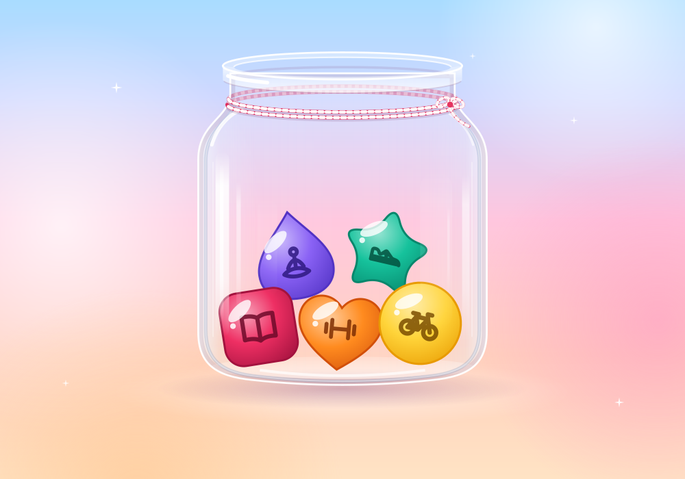

Daily habit tracker for iPhone & Android
Hopjar
Every day starts with an empty jar. Tap what you did, and it hops in.
Make a jelly for each thing you like to do, from reading to running. Add a detail, a note or a to‑do when you feel like it, and look back on a calendar of tiny jars. There are no schedules or streaks.

Questions
Where does Hopjar keep what I log?
On your phone. Your habits, jars, notes and to‑dos live in Hopjar’s own storage there, and you don’t need an account. Unless you turn on the backup, Hopjar makes no network connections of its own, and there are no ads, analytics or tracking.
Want a copy? Settings › Export my data puts everything in one file and opens the share sheet.
Do I need the backup?
No, it’s optional and stays off until you sign in with Apple or Google in Settings › Back up your jar. Then a copy of your jar is kept with your account, in the EU (Frankfurt, Germany), so you can get it back on a new phone.
Signing out stops the backup on that phone. Your jars stay on the phone either way.
How do I delete my account?
In Hopjar, open Settings › Back up your jar › Delete account. It deletes your account and everything backed up with it, straight away. The jars on your phone stay until you delete the app.
No longer have Hopjar? Email me from the address you signed in with and I’ll delete the account and its backup for you. See what gets deleted.
Does Hopjar change my health data?
No. Hopjar only reads Apple Health (iPhone) or Health Connect (Android), and only after you switch on “Fill from Apple Health” or “Fill from Health Connect” for a habit. Each time you open Hopjar, it looks for that one kind of activity from today and yesterday, drops the habit into that day’s jar and, if the habit tracks a distance or minutes, fills that in.
It never writes health data, reads nothing else and never shares it. You can change Hopjar’s access any time in Settings › Privacy & Security › Health on iPhone, or in Health Connect › App permissions on Android.
Support
Something not working, or an idea for Hopjar?
I’m Danijel, the developer. Send me your phone model, its iOS or Android version and what happened. Suggestions are welcome too.
danijel@danyzmaj.comHopjar has no ads, analytics or tracking. Read the privacy policy.